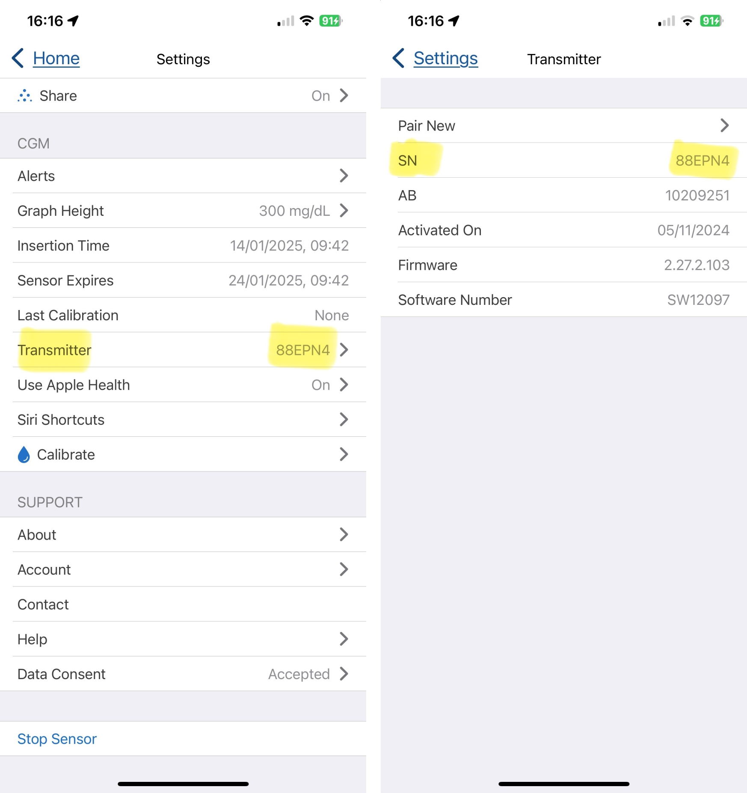

Add CGM
CGM Choices¶
A CGM can be added from the Heads-Up-Display (HUD) or from the Loop Settings screen ⚙️.
The HUD will look like the graphic below if no CGM or Pump is connected with Loop:

Loop can be connected to the following CGMs:
- CGMs that reside on the same phone (internet not required)
- Dexcom G5
- Dexcom G6 (use this for Dexcom ONE)
- Dexcom G7 (Loop 3 only)
- Minimed Enlite CGM
- Medtronic Pump only
- You must add pump first
- If Enlite is connected to Medtronic pump and that pump is connected to Loop, then an option for Enlite shows up when choosing a CGM, not visible in graphic below
- Libre: LibreTransmitter was added to the dev branch (and thus will be supported in the next release of Loop)
- Only some Libre sensors are supported; some have encryption that limits DIY use
- No details for using Libre will show up on this page until the next release - please read Build Loop-dev and follow the links to understand what you are doing if you choose a development branch
- CGMs that require active internet (WiFi or Cell)
- CGM Simulator - useful to learn the app interface
Add CGM¶
To add a CGM, go to the Settings screen ⚙️, tap on Add CGM, and tap on your CGM.

If you later decide to use a different CGM type, you must first delete the CGM and then add CGM to choose the new one.
- For Dexcom G5, G6 or ONE, you must delete the CGM when you change transmitters (about once every 90 days)
Remote Upload from Loop¶
Loop provides an option to upload CGM values to a remote service like Nightscout or Tidepool. In many cases this can be a preferred solution.
With Loop 3, the data-store on the Loop phone keeps a full week of data. If there is an interruption in the upload, when it is restored, Loop will fill in up to 1-week of CGM data that was not previously uploaded.
Some people use Dexcom Share to feed their remote services. There have been outages with Share. When those occur, the data is not back-filled like it is with Loop.
This is the reason why there's a comment under each CGM below to select Upload Readings.

Dexcom G5, G6, ONE¶
To use the Dexcom G5, G6 or ONE:
- Select Dexcom model, use
Dexcom G6for either G6 or ONE - Dexcom app must be running on the Loop iPhone and paired to an active transmitter
- User must enter that active transmitter ID in the location indicated by the red rectangle in the graphic below
- Do not enter your
Share Credentials- The graphic below shows
Tap to set - Do not tap, leave it alone
- The graphic below shows
- Only add the transmitter ID to Loop after it is paired with the Dexcom app on your phone

Where to get the Transmitter ID for Dexcom G6?¶
You can find the transmitter ID in your Dexcom G6 app or on the back of the transmitter box (please refer to the below screenshots).
- In your Dexcom G6 app
- Tap "⚙️ Settings"
- The transmitter ID is located under section "CGM" where it says "Transmitter" with a the 6-digit string.
- Alternatively, while in Settings, tap on the > in the "Transmitter" row: your transmitter ID is the 6-digit identifier next to "SN" (short for serial number).

- On the back of your transmitter box
- Your transmitter ID is the 6-digit number next to "SN" and the QR code on the back of the carton.

It is recommended that you enable Remote Upload from Loop.
Change Dexcom Sensor¶
When you change a Dexcom G5, G6 or ONE sensor, you do this in the Dexcom app. When the sensor completes warmup and CGM values are once again reported in the Dexcom app, Loop picks these values up because you are using the same Dexcom Transmitter.
Change Dexcom Transmitter¶
When you change the Dexcom G5, G6 or ONE Transmitter, you need to delete your CGM selection from Loop and then add it back after you complete the pairing with the transmitter in your Dexcom app.
FYI: When You Change Dexcom Transmitters (click to open)
Before you change Dexcom transmitters, select the Delete CGM button at the very bottom of the CGM info page in Loop. If you leave the transmitter connected in Loop, you may have trouble pairing your new transmitter. If pairing does work, then Loop will not get CGM data from the Dexcom app on your phone.
Follow the instructions here: What do I do when I switch Dexcom transmitters?.
The Dexcom G7 is handled differently - Loop automatically detects when a new sensor/transmitter pair is added to the Dexcom G7 app.
Your selection to enable Remote Upload from Loop must be repeated with each new Transmitter. The default setting is disabled.
About Dexcom Share credentials¶
You do NOT need your Share account info listed in Loop settings if you are using a G5 or G6 system. The transmitter ID is sufficient. In fact, you should leave your Share credentials blank so that you don't accidentally become internet-dependent for CGM data if you forget to update your transmitter ID when you start a new transmitter.
Dexcom G7¶
This is only available on Loop 3.
You must have the G7 app on the same phone as Loop. When the G7 app switches to the next sensor/transmitter assembly, Loop automatically switches too.
It is recommended that you enable Remote Upload from Loop.
Don't forget Health Permissions
For those switching from Dexcom G6 to Dexcom G7, you might forget to add permission for the G7 app to write to Apple Health. If you want long-term history of those CGM readings to persist in Apple Health, turn on the permission for the Dexcom app to write glucose to Health.
If either the G6 or the G7 has permission to write to Apple Health, then Loop will delete the Loop glucose data in Apple Health that are older than 3 hours and newer than 1 week. The Dexcom app will write its glucose values to Health when each value is 3 hours old.
Medtronic Enlite CGM¶
The Medtronic Enlite CGM is only available if you have connected it to your compatible Medtronic Pump.
- Make sure your pump reports the Enlite CGM results
- Go through the Add Pump to Loop steps with that Medtronic pump
- Then do the Add CGM steps and the sensor should be presented as an option
Dexcom Share as a CGM¶
If you need to use Dexcom Share
If the dexcom is on another phone, you can use Share if internet / cell coverage is good.
Dexcom Share is not available for Dexcom ONE CGM.
The Dexcom Share credentials (in other words, account login) is the same as what you used to log in to the active Dexcom app on your iPhone. Dexcom Share account is not always the same login info as your Dexcom Clarity account. The information is entered when you first log in to the app and then is never displayed again, nor visible under any information screens. If you have forgotten your G5/G6 account info, you can delete the Dexcom app and redownload it to try logging in again. This will not cause a restart of any sensor sessions in progress.
If you do not enter your Share credentials correctly into Loop, you will get an error when Loop tries to access your Share account to backfill CGM data. An example of the error message is shown in the graphic below. If you see that message, delete your Share account from Loop settings and try again.

Nightscout Remote CGM¶
If the user is already uploading CGM data to their Nightscout URL, they can select that as a source for CGM data for Loop. The user must acknowledge they understand the risks of using a remote source that requires internet, as shown in the graphic below.
In addition to the risks of missing data if the internet is not reliable, you must also make sure the CGM data sent to Nightscout is reliable.
DANGER - Make sure Nightscout CGM Data is Reliable
Just because you can use Nightscout as a CGM source does not mean you should.
If you decide to use Nightscout as a CGM source, make sure the data stored in Nightscout is reliable. If the app you choose uploads bad results to Nightscout, you don't want Loop to use that bad data.
Sensors that can be added to Nightscout via other apps include Dexcom, some Libre and some Medtronic sensors. Please refer to Nightscout Docs: Configure your Uploader.
There are third party apps that bring Libre data to your Loop phone and there are customization instructions starting at Libre Support for Loop 3.2.x Code that explain how to modify Loop 3 to use one of those apps. Please use these steps to get a version of Loop that does not rely on internet access to work.
It is recommended that you use Open Loop during warmup until the new sensor begins to provide reasonable data. This is especially important with European Libre 2 using direct bluetooth connection.
The xDrip4iOS app (which can also be found in the app store under the name Shuggah) may have a problem during warmup of a new sensor (European Libre 2 using direct bluetooth connection). There were two instances of crazy high values being reported and picked up by Loop 3. One Shuggah user and one xDrip4iOS user who connected via Nighscout as a CGM with Loop 3 had serious overdose of insulin because of bad readings with a new sensor. The developers of xDrip4iOS fixed their application - so make sure you have the latest version. Those developers have no control over what is provided by Shuggah.

The user must enter both the URL and API_SECRET for their site to ensure the security of the data. The URL must start with https:// and cannot have any extra spaces in the line.
When using Nightscout Remote CGM, if the user needs to change credentials or switch to a different CGM, the user must go through the Loop->Settings ⚙️->CGM menu.
Change CGM¶
To change CGMs, delete your existing CGM and then add a new CGM.
Change a Nightscout Remote CGM¶
For Nightscout Remote CGM, the Nightscout URL is opened when tapping on the CGM icon in the Heads-Up Display, while the credential sections with the Delete CGM row are shown when tapping on Loop Settings ⚙️, and selecting CGM.
After deleting a CGM, the Head-Up-Display at the top of the Loop main screen will show the Add CGM icon.
Change Other CGM¶
Other CGM, you can tap on the CGM from either the Heads-Up Display or tap on Settings ⚙️, and select your CGM.
Scroll to the bottom of the screen and select Delete CGM.
For some CGM that can be added to Loop 3 with a patch, the words may be different, but the steps are the same.
Dexcom G5, G6 and One (not G7)¶
For older Dexcom sensors, the transmitter is replaced separately about once every three months. In order to enter a new transmitter number, you must first delete the CGM and then add the CGM.
Detailed instructions are found at CGM FAQs: What do I do when I switch Dexcom transmitters?.
Once the Dexcom G7 has been added to Loop, the user only needs to let the Dexcom G7 app know when to use the new sensor. The Loop app automatically switches to the new sensor with no additional steps required by the Looper.